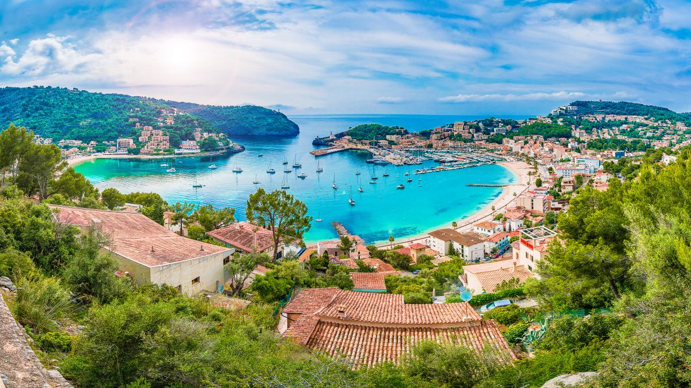
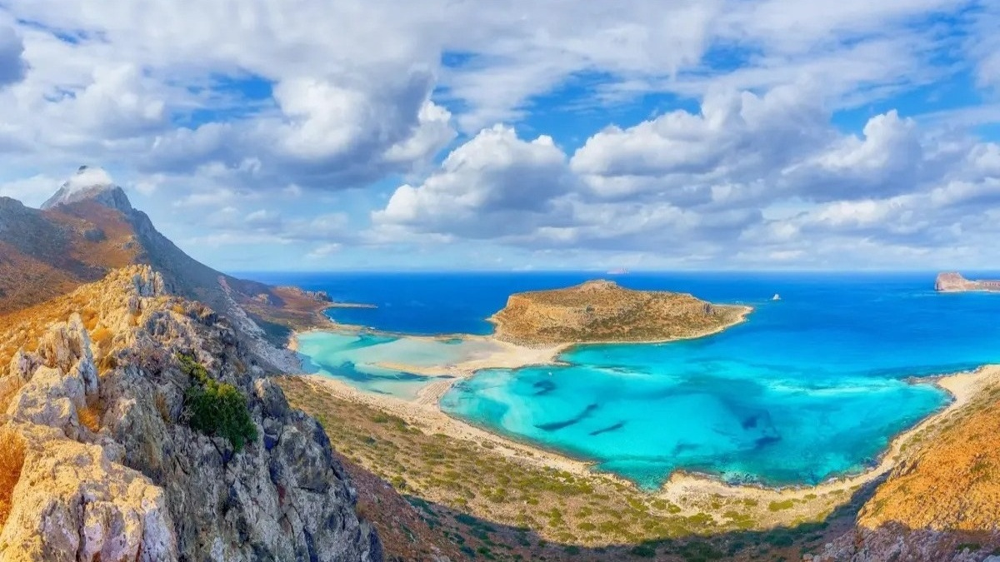
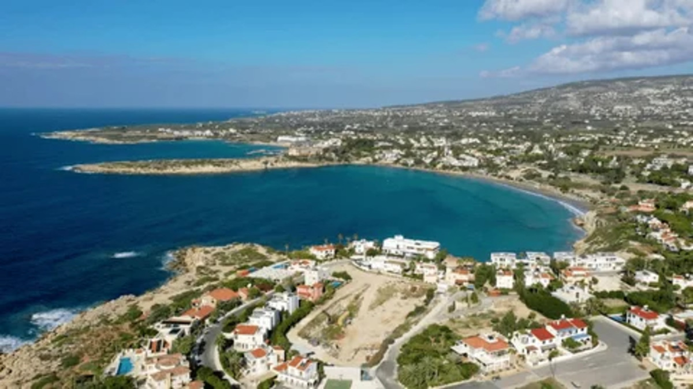
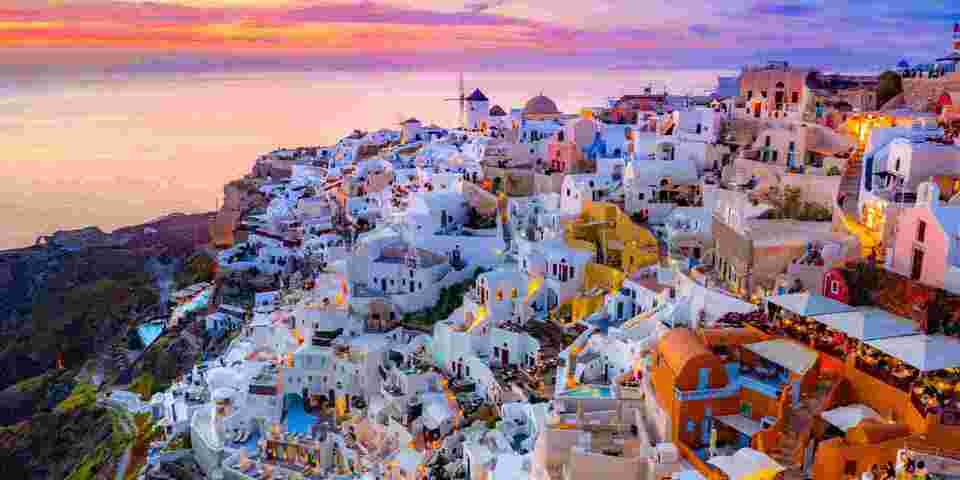

Európa tele van gyönyörű szigetekkel, amelyek minden látogatót lenyűgöznek. Az alábbi weboldalon néhány ilyen varázslatos helyet mutatunk be.

Mallorca a legnagyobb sziget a Baleár-szigetek között, Spanyolországban. Híres strandjairól, festői tájairól és történelmi városairól.
Legismertebb látnivalók:
La Seu katedrális Bellver kastély Soller vonat Cap de Formentor Valldemossa
Kréta a legnagyobb görög sziget, amely történelmi és kulturális kincseiről híres. Csodálatos strandok, hegyek és ősi romok várják a látogatókat.
Történelmi helyszínek:
Knósszoszi palota Phaistos romjai Gortyn ókori város Spinalonga erődítmény Archanes régészeti lelőhely
Ciprus a Földközi-tenger harmadik legnagyobb szigete, amely gazdag történelmi örökséggel és gyönyörű strandokkal rendelkezik. A sziget két részre oszlik: a görög déli részre és a török északi részre.
A sziget híres a különleges kultúrájáról és vendégszeretetéről, valamint a történelmi helyszínekről, mint például a Kyrenia kikötő és a Paphos mozaikok.
| Név | Ország | Terület (km²) | Népesség | Érdekesség |
|---|---|---|---|---|
| Mallorca | Spanyolország | 3,640 | 896,000 | Legnagyobb Baleár-sziget |
| Kréta | Görögország | 8,336 | 623,065 | Legnagyobb görög sziget |
| Ciprus | Ciprus | 9,251 | 1,170,125 | Megosztott sziget |

Santorini a legismertebb görög sziget, híres fehérre meszelt házairól, kék kupolás templomairól és lenyűgöző naplementéiről.
Európa szigetei sokszínűek, különböző kultúrákat, történelmi helyszíneket és természeti szépségeket kínálnak. Ezek a szigetek kiváló úticélok nyaraláshoz és felfedezéshez.
A mediterrán térség szigetei híresek kellemes éghajlatukról, gyönyörű tengerpartjaikról és gazdag történelmükről. Sok turista keresi fel ezeket a helyeket, hogy megismerje a helyi ételeket, hagyományokat és látványosságokat. A szigeteken található ókori emlékek és festői falvak különleges hangulatot teremtenek.